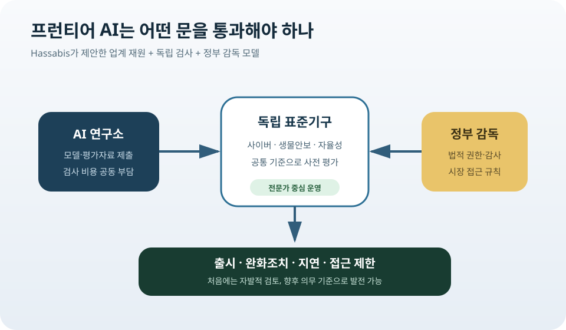

DeepMind가 제안한 AI 감시기구: 프런티어 모델을 누가 출시 전에 검사할까
Google DeepMind CEO Demis Hassabis가 세계 최상위 AI 모델을 출시 전에 검사하는 미국 주도의 표준기구를 제안했다. 업계가 비용을 내고 최고 수준의 기술 전문가가 평가하되 미국 정부의 감독을 받는 구조다. 자율규제와 정부 허가제 사이의 중간 모델이지만, 안전을 높이는 공통 시험장이 될지 대형 AI 기업을 위한 새로운 진입장벽이 될지는 아직 열려 있다.
Frontier AI Standards
회사별 안전보고서 대신, 모든 최상위 모델이 같은 문을 통과하게 하자는 제안
Axios 인터뷰에 따르면 Hassabis는 금융업계의 FINRA와 비슷한 AI 표준기구를 구상했다. 처음에는 자발적인 출시 전 검토로 시작하고, 위험과 합의가 커지면 시장 접근에 필요한 의무 검사로 발전시킬 수 있다. 대상은 회사 국적이나 오픈·폐쇄 여부가 아니라 일정 능력 기준을 넘는 프런티어 모델이다.

제안은 어떻게 작동하나
핵심은 고성능 모델이 일반 공개되기 전에 공통 안전평가를 받는 것이다. 평가 영역에는 사이버 공격 지원 능력, 생물학적 위험 정보, 핵·국가안보 관련 능력, 자율적인 장기 작업, 통제 회피 가능성이 포함될 수 있다. 통과 여부와 완화 조치를 외부 전문가가 검토한다.
재원은 규제를 받는 AI 기업들이 부담하되, 일상 운영은 독립된 기술조직이 맡는 구상이다. 정부 부처가 모든 모델을 직접 시험하면 전문인력과 속도가 부족하고, 회사가 스스로 시험하면 출시 경쟁과 안전판단이 충돌한다. 두 약점을 줄이기 위한 혼합형 구조다.
미국 정부는 표준기구 위에서 감독 역할을 맡는다. FINRA가 민간 비영리 조직이면서 미국 증권거래위원회 감독 아래 증권사를 규율하는 것처럼, AI 기구도 업계의 기술 전문성과 정부의 법적 권한을 결합하자는 생각이다.
적용 기준은 특정 모델 이름이나 파라미터 수에 고정하지 않는다. 모델 능력이 빠르게 변하기 때문에 사이버·생물학·자율성 평가에서 일정 문턱을 넘는지를 보고 프런티어 범위를 주기적으로 갱신해야 한다. 작은 연구모델까지 같은 규제를 적용해 혁신을 막지 않으려는 장치다.
왜 지금 이런 제안이 나왔나
Hassabis는 현재의 AI 기반 사이버 위험을 앞으로 올 더 큰 위험의 예고편으로 본다. Axios에 따르면 그는 약 18개월 안에 더 강한 사이버 능력과 생물학·핵 관련 위험이 오픈 모델에 들어갈 가능성을 경고했다. 예측이 맞는지는 불확실하지만, 공개 뒤 회수가 어려운 능력을 사전에 시험해야 한다는 논리는 여기서 나온다.
최근 미국 정부가 특정 프런티어 모델의 접근과 배포에 즉흥적으로 개입한 사건도 배경이다. 회사와 정부가 위기 때마다 별도 협상하면 기준이 불투명하고, 정치적 상황에 따라 결과가 달라질 수 있다. 상설기구는 미리 정한 평가와 대응 절차를 제공할 수 있다.
AI 연구소 최고경영자들의 메시지도 가까워졌다. Anthropic의 Dario Amodei는 강한 규제기관을, OpenAI의 Sam Altman은 국제적 인증 체계를 제안했다. 세부 모델은 다르지만 최상위 모델의 안전을 회사별 약속에만 맡길 수 없다는 진단은 비슷하다.
회사 자체 평가가 왜 부족한가
주요 AI 회사는 이미 시스템 카드, 레드팀 결과, 위험 프레임워크를 발표한다. 문제는 시험항목과 공개 수준이 서로 달라 모델 간 비교가 어렵다는 점이다. 한 회사는 사이버 점수를 자세히 공개하고 다른 회사는 사용정책만 설명하면 정부와 고객은 어느 모델이 더 위험한지 판단하기 어렵다.
이해상충도 있다. 안전팀은 위험을 찾고 출시를 늦출 수 있어야 하지만 회사는 경쟁사보다 먼저 제품을 내야 한다. 같은 조직 안에서 매출과 안전을 동시에 판단하면 경계선 사례에서 출시 쪽으로 기울 가능성이 생긴다. 외부 평가는 최소한 판단 주체를 분리한다.
공통 평가가 생기면 기업 고객도 이익을 본다. 은행, 병원, 정부가 모델을 도입할 때 회사의 홍보문구 대신 표준화된 능력·위험 보고서를 비교할 수 있다. 사고 발생 시 누가 어떤 시험을 했고 어떤 조건으로 출시를 허용했는지 추적하기도 쉬워진다.
가장 큰 반론: 대기업이 만든 규칙이 될 수 있다
Google DeepMind처럼 거대한 회사는 복잡한 인증비용과 문서작업을 감당할 수 있다. 작은 연구소와 대학, 오픈소스 프로젝트는 같은 절차가 큰 부담이 된다. 안전을 명분으로 한 표준이 결과적으로 기존 대기업의 시장 지위를 지키는 장벽이 될 수 있다.
업계가 돈을 내는 구조도 독립성 논란을 피하기 어렵다. 검사 대상 기업이 기구의 예산을 책임지면 평가 기준을 완화하거나 유리한 전문가를 선임하려는 압력이 생길 수 있다. 이사회 구성, 예산 공개, 이해충돌 방지, 평가결과 공개 범위를 법으로 명확히 해야 한다.
또 안전평가가 “통과 도장”처럼 쓰일 위험이 있다. 사전 시험에서 발견되지 않은 능력이 실제 사용 중 나타날 수 있고, 모델 업데이트로 위험이 달라질 수 있다. 출시 전 검사는 필요하지만 운영 중 모니터링, 사고보고, 긴급 중단 절차와 함께 가야 한다.
오픈 모델은 어떻게 다룰까
Hassabis의 구상은 국적과 공개방식에 관계없이 능력 기준을 적용한다. 원칙상 명확하지만 실행은 어렵다. 폐쇄형 API는 사업자가 접근을 제한하거나 모델을 교체할 수 있지만, 가중치가 인터넷에 공개된 모델은 한 번 배포되면 전 세계 복사본을 회수하기 어렵다.
공개 전에 평가를 강제하면 개발자가 다른 국가에서 배포하거나 작은 수정본으로 기준을 우회할 수 있다. 반대로 오픈 모델만 더 엄격하게 막으면 연구 투명성과 중소기업의 접근을 해칠 수 있다. 배포 시점, 호스팅 사업자, 고위험 사용을 각각 나누는 정교한 규칙이 필요하다.
미국 주도 기구가 세계 표준이 될 수 있을까
미국은 첨단 칩, 클라우드, 주요 AI 연구소를 보유해 영향력이 크다. 미국 시장과 컴퓨트 접근을 인증 조건에 연결하면 해외 기업도 규칙을 따를 유인이 생긴다. 그러나 유럽연합, 영국, 중국, 한국이 미국 기관의 판단을 그대로 받아들일지는 별개다.
국제적 정당성을 얻으려면 평가방식과 전문가 선임을 여러 국가가 검증할 수 있어야 한다. 각국 AI 안전기관과 결과를 상호 인정하거나, 공통 최소기준 위에 지역별 규칙을 더하는 방식이 현실적이다. 미·중 갈등 속에서 중국 모델을 미국 기구가 검사하는 문제는 특히 정치적이다.
한국이 볼 지점
한국은 자체 프런티어 모델을 개발하면서 미국 모델도 대규모로 사용한다. 국제 인증체계가 생기면 국내 기업은 해외시장 진출과 정부조달에서 추가 시험을 요구받을 수 있다. 반대로 한국의 안전평가 역량을 국제표준과 연결하면 새로운 기술·인증 산업을 만들 수 있다.
중요한 것은 해외 기준을 번역해 적용하는 데 그치지 않는 것이다. 한국어 위험평가, 국내 행정·금융 시스템, 사이버 환경에 맞는 시험을 만들고, 결과를 미국·유럽 기관과 상호 인정받는 구조를 준비해야 한다.
내가 보는 핵심
이 제안의 장점은 “규제할 것인가 말 것인가”라는 추상적 논쟁을 실제 출시 절차로 바꿨다는 데 있다. 누가 어떤 모델을 언제 시험하고, 위험이 나오면 무엇을 요구할지 구체적으로 논의할 수 있게 한다.
그러나 검사기관의 존재만으로 안전이 보장되지는 않는다. 대기업 포획을 막는 독립성, 오픈 모델에 맞는 규칙, 국제적 정당성, 출시 후 사고 대응이 함께 설계돼야 한다. 앞으로 봐야 할 것은 찬반 선언보다 이 네 가지가 실제 제도안에 들어가는지다.
Comments
댓글